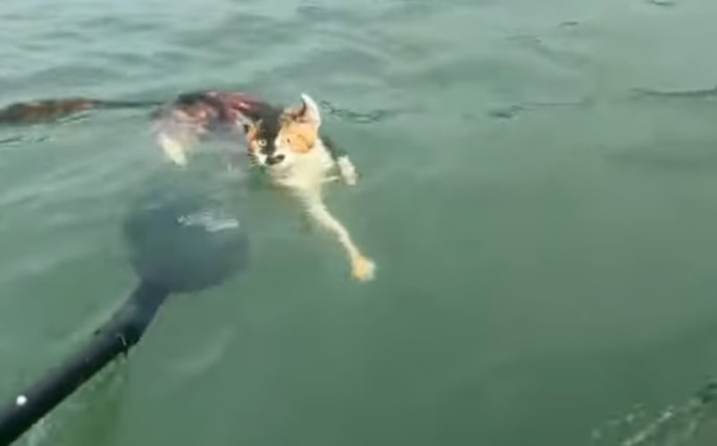

현지시간 9일 사우스차이나모닝포스트(SCMP)에 따르면, 사건은 지난 1일 중국 광둥성 칭위안시 잉쭈이 저수지에서 발생했습니다.
이날 잉쭈이 저수지에 마스크를 쓴 사람들이 트럭을 몰고 나타나 대량의 고양이를 방생하는 영상이 온라인에 퍼졌습니다.
방생은 물고기, 거북이, 새 등의 동물을 자연으로 돌려보내 자비를 실천하고 영적 공덕을 쌓는 전통 불교 의식이지만, 생태계에 악영향을 준다는 논란이 이어지고 있습니다.
당시 방생 장면이 담긴 영상에는 약 1,120마리의 고양이를 실은 대형 트럭 2대가 저수지에 도착해 고양이들을 풀어놓는 모습이 담겼습니다.
아니 씨발 고양이가 언제부터 수중생물이었냐
저러다 진화해서 워터애옹스 되면 어떡함..